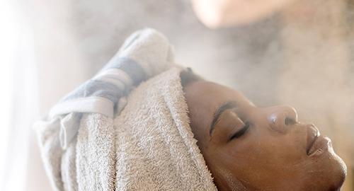
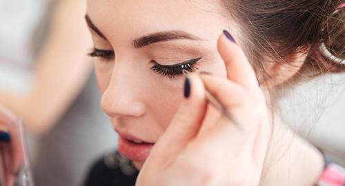
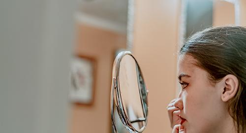

Here's Everything You Need To Know About Hair Steaming
If you have a curly or coily hair texture, you probably know that the best way to keep your hair moisturized is with a good 'ol deep conditioner and plastic cap combo. I've been using the old school technique since the age of 10. (Thank you, mom!) But, I'm here to tell you that there's another (and possibly better) way to hack your deep conditioning session and to enhance the moisture of your hair. Please welcome steaming treatments to the party. To find out more about hair steaming's benefits and what makes it so great for your strands and scalp, I talked to a trichologist and colorist, Bridgette Hill. Below, Hill answers all my hair steaming questions and offers a few steamers and products to shop.
What is hair steaming?
This treatment is exactly what it sounds like: applying steam to your hair and scalp. “Steaming is using moist heat to open the hair cuticle to allow benefits of treatments, oils, and masks to penetrate deeper into the hair fiber for maximum hydration and moisturization,” says Hill. “When the steam produces moist heat, the cuticle slowly, gently swells and is infused equally with water and treatment. Dry heat from a dryer lifts the cuticle, allowing the healing ingredients to penetrate the strand, but does not allow the product to penetrate deeply. [This is] why it is often suggested to use a plastic cap when using a hooded dryer to establish a moisturized environment inside of the plastic cap.” But steaming isn't just for your hair: it has incredible benefits for your scalp, too.“I like to [compare it] to a pedicure," explains Hill. "Think about exfoliating the heels of the feet. There is a more impactful removal of dead skin when you soak your foot in water. Steaming the scalp works similarly— because moisture-based heat softens the skin cells on the scalp and the base of the root in a non-invasive way. Steaming the scalp is a primary step necessary for removing built-up skin cells and improving blood flow and circulation. Similar to the hair fiber, the steam also allows for the active ingredients to penetrate the dermis at a deeper level."
What are the different ways you can use steam to take care of your hair and scalp?
According to Hill, steam is excellent at refreshing coily and curly hair textures to help maintain curl definition and minimize product use. "A functional handheld steamer like the Q-Redew is a solid option," says Hill. "The finger-like prongs can be combed through to rehydrate and elongate your curl. Repeated use can help in minimizing shrinkage over time."
What should people avoid when steaming their hair?
“The biggest mistake people make with steaming hair is using a poor-quality product," says Hill. "To truly benefit from steam, look for treatments that are rich in fatty acids, like shea butter oil, avocado, or castor oil.”
How should you take care of your hair after you steam it?
Hill insists that the best maintenance is regularly applying moisture to your ends (she loves Rene Furterer 5 Sens Enhancing Dry Oil), reducing the use of heat tools, and avoiding over shampooing the hair.
Who should avoid steaming treatments?
“Anyone suffering from severe scalp concerns, psoriasis, eczema, folliculitis, dermatitis should not steam unless supervised by a scalp care professional or dermatologist," warns Hill. "It is important not to overstimulate or remove the in on scabs or sores that may have skin cells healing underneath the protective healing of the sore or scab. When steam is used at inappropriate times during the hair growth and skin shedding cycle, steam could disrupt the microbiome and contribute to bacterial or fungal infections.”
Losing Hair Lately? This Might Be Why
If you’ve been staring at your brush or your shower drain and feeling like you’ve been
losing a lot of hair lately, don’t despair.
A recent British Journal of Dermatology study suggests that shedding more strands in the summer and
fall is normal.
A seasonal pattern of hair loss has been long suspected; it’s been observed anecdotally and
documented in previous small studies.
But those studies have focused on just one demographic or geographic location, so it hasn’t been
possible to know if those findings apply to everyone.
Across all eight countries, the results were the same: People searched the Internet using phrases
related to hair loss more frequently in the summer and fall compared to the winter and spring.
The finding is relevant to doctors whose patients complain of hair loss in those two seasons, the
authors say, and it may be useful in assessing how effective certain therapies at
treating the condition.
But more research is needed, they add, to determine exactly why this pattern happens—and how much
people should care.
“Mildly increased hair loss in the summer and fall is normal,” co-author Dr. Shawn Kwatra, assistant
professor of dermatology at Johns Hopkins University School of Medicine, tells Health.
“This is speculative, but from an evolutionary perspective one of the roles of hair loss is to
provide warmth,” he says. “This would be less necessary during the summer months.”
The tendency to grow thicker coats in the winter—and shed them in the summer—has also been
documented in a variety of animals, including monkeys, cats, dogs, and camels.
In humans, seasonal hair loss has been reported more in women than in men, Kwatra says, although the
current study could not distinguish Google searches by gender.
According to the American Academy of Dermatologists , it’s normal to lose between 50
and 100 hairs a day. Noticing a little extra hair in the shower drain may be nothing to worry about,
says Kwatra, especially if it’s during a warm-weather month.
But if those extra strands are enough to freak you out—or, ahem, send you to Dr. Google—it may be
worth checking with your physician. About 40% of Americans suffer from unwanted hair shedding, and
many women as well as men will notice an increase in hair loss as they get older.
In addition to seasonality, hair loss can be caused by a stressful event (like childbirth or a high
fever), weight loss of more than 20 pounds, or a change in birth-control pills. Factors like diet,
heredity, and thyroid levels can play a role as well.
Luckily, not all hair loss is permanent, and your doctor may be able to suggest remedies—like
supplements or topical treatments—that may help to slow the process.
Significant hair loss may also indicate another underlying health condition, says Kwatra, so it’s
important to get checked out by a pro.
Eye Makeup and Dry Eyes: The Inside Scoop
When you have dry eyes, all you want is to make your eyes feel more comfortable. You may talk to your doctor about prescription eye drops , special ointments, or even surgery to close your tear ducts. But did you know that your makeup habits may be making your dry eyes worse? Before seeking treatment, you might want to first consider changing your makeup habits. Items that come in close contact with your eyes, such as mascara and eyeliner, may contaminate your tears and make your symptoms worse.
What is dry eye?
Dry eye is a condition in which your eyes are unable to produce the proper tears to keep the eye moist. Your tears may be evaporating too fast, leaving your eyes dry and scratchy. Or your tears may not have the correct balance of oil, water, and mucus to be effective. There are many reasons why dry eyes occur. Sometimes it’s because your body is aging. Other times it’s because of an underlying medical condition like rheumatoid arthritis a thyroid problem. No matter what causes dry eyes, using makeup can make them worse. You should know which products to avoid and how to properly apply makeup to preserve tears.
Choosing the right makeup product
Certain makeup products can irritate your eyes and thin out your tear film. Here are some tips for choosing the best product if you have dry eyes:
- Avoid old mascara that crumbles when it dries.
- Use thickening mascara since it’s less likely to flake after it dries.
- Consider using an eyelash curler instead of mascara.
- Avoid makeup removers that have oil or parabens.
- Avoid powder-based and liquid-based products, including eye shadows and foundations.
- Use cream-based products instead.
Why some products can make your dry eyes worse
Many eye makeup products come in contact with the membrane covering your eyeball. This is also called
your tear film.
Studies suggest that where you apply eye makeup can make a difference. One experiment involved
measuring the volume of glitter particles in subjects’ tears when using eyeliner.
Those who applied the liner along the lash line experienced a higher volume of particles in their
tear film than those who applied it outside the lash line.
The researchers suggested that the movement of makeup particles into the tear film could make eye
irritation and dry eyes worse.
For instance, if you use mascara that crumbles when it dries, you’ll get particles in your tear
film.
If you apply powder close to the bottom of your eye, you increase your risk of particles moving up
into your eye.
Powder eye shadows can also expose your eyes to even more loose particles.
The bottom line is that eye makeup can thin out your tear film. This causes tears to evaporate more
quickly.
In fact, some people get dry eyes because of eye makeup.
How to use makeup when you have dry eyes
Although eye makeup can cause problems with dry eyes, there are ways to apply it to minimize particle transfer. Here are some tips:
- Insert lubricating eye drops about 30 minutes before applying makeup.
- Use separate applicators for each type of makeup.
- Always apply eye makeup outside of your eyelashes.
- Apply mascara to just the tip of the eyelashes.
- Keep mascara use to a minimum.
- Use makeup on other areas of your face instead of the eyes.
You should also take care when removing makeup, and use healthy makeup practices. This includes the following:
- Always take off eye makeup before you go to sleep.
- Try a little baby shampoo on cotton or a cloth to remove makeup.
- Decrease bacteria from eye pencils by sharpening them before each use.
- Wash makeup brushes on a regular basis.
- Don’t use makeup when you have an eye infection.
Takeaway
The best way to be sure eye makeup doesn’t irritate your eyes is to avoid wearing any. If you have chronic dry eyes, you may not be able to apply eye makeup. Applying mascara and eyeliner to the inner part of the eyelash can also affect your tears and irritate your eyes. Make the decision about eye makeup that’s right for you. If you have severe or chronic dry eye, eye makeup is probably not for you. However, with the right hygiene, application, and products, you may be able to keep wearing it.